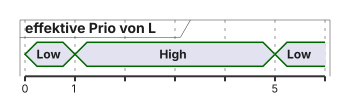

04 · Synchronisation und Ressourcenverwaltung
Race Conditions, Mutexe, Deadlocks und Priority Inversion · EZS · DHBW Stuttgart
Prof. Dr.-Ing. Daniel Klünder
Willkommen auf der dunklen Seite der Echtzeit!
Vierter Termin: geteilte Ressourcen auf einem FreeRTOS-Kern (CM4)
Präemption ist nützlich und erzeugt konkurrierende Zugriffe
Heute: Race, Semaphor, Mutex, Deadlock, Prioritätsinversion
Ein Mutex dieses Kernels schützt nicht den CM7, DMA oder fremde ISRs
Präemption aus den vorigen Terminen lässt einen höherprioren Thread schnell an die CPU. Derselbe Mechanismus kann einen laufenden Zugriff unterbrechen, bevor die gemeinsame Ressource wieder konsistent ist. Heute bleibt der Kernel ein FreeRTOS auf dem Cortex-M4, kurz CM4. Ein RTOS ist ein Echtzeitbetriebssystem. Race Condition heißt: das Ergebnis hängt davon ab, wie sich die Ausführungen verschachteln. Ein Semaphor zählt Berechtigungen, ein Token, ohne sich den Besitzer zu merken. Ein Mutex, Mutual Exclusion, merkt sich den Owner und schließt andere Threads von derselben Invariante aus. Ein Deadlock ist ein Wartezyklus auf Ressourcen.
Der Mutex dieses einen Kerns schützt nicht den zweiten Kern CM7, nicht DMA, Direct Memory Access, und nicht eine ISR, die den Vertrag nicht einhält. Eine Interrupt Service Routine ist die Behandlungsroutine eines Interrupts. Der Titel bleibt zugespitzt. Ein Fehler ist hier ein falsches Ergebnis, nicht automatisch ein Systemabsturz.
Aus der Frage nach gemeinsam verwendeten Ressourcen entsteht die Agenda vom Fehlerbild bis zum Labor.
Agenda für heute
Lost Update und was „atomar“ hier heißt
Spin, IRQ-Maske, Blockieren
Semaphor und Mutex, inklusive ISR-Regeln
Deadlock und Prioritätsinversion mit Zahlen
Pathfinder als belegte Fallstudie, dann Labor
Die Reihenfolge ist ein Lernweg. Zuerst muss ein Lost Update sichtbar werden: eine beabsichtigte Änderung geht verloren, weil ein späteres Schreiben den alten Wert zurücklegt. Danach vergleichen wir Schutzmechanismen. Spin heißt aktives Warten. Eine IRQ-Maske sperrt einen Dringlichkeitsbereich. IRQ ist die Interruptanforderung. Blockieren gibt die CPU frei. Anschließend trennen wir Tokenzahl und Besitz. Deadlock und Prioritätsinversion, kurz PIP für Priority Inheritance Protocol, brauchen dieselben Zahlen in beiden Vergleichen, sonst misst man eine andere Aufgabe.
Pathfinder ist die Fallstudie am Ende, kein neues Rechenmodell. Die Laborwerte und die Lehrzeiten bleiben getrennt.
Für alle folgenden Probleme wiederholen wir zuerst, wann ein Thread überhaupt laufen darf.
Recap: Die Macht der Präemption
Wechsel nicht nur am SysTick: auch ein Ereignis oder eine IRQ kann einen Thread bereit machen
Im üblichen CM4F-Port führt PendSV den Kontextwechsel aus
Auf einem Kern rechnen nicht zwei Threads gleichzeitig
„Gleichzeitig“ heißt hier: verschachtelt, mit eigenen Registern
Running heißt: dieser Thread führt gerade seine Befehle aus. Ready heißt ausführungsbereit, noch nicht an der CPU. Blocked heißt: der Thread wartet und führt keine eigenen Befehle aus. Eine höhere Priorität hilft nur, wenn der Thread schon Ready ist. Vor seiner Freigabe, dem Release des Jobs, ist er nicht Ready. Release eines Jobs ist nicht dasselbe wie das Freigeben eines Locks.
SysTick ist der Systemtimer. Eine IRQ kann einen Thread bereit machen, ohne den Tick abzuwarten. PendSV ist die aufschiebbare Cortex-M-Exception, in der der übliche CM4F-Port den Kontextwechsel ausführt. Dabei werden Register und Stack des unterbrochenen Threads gesichert und die des nächsten geladen. Auf einem Kern laufen danach nicht zwei Threads parallel. „Gleichzeitig“ meint hier nur die Verschränkung.
Ein neuer Kontext kann nun dieselbe UART-Ressource benutzen, während die erste Nachricht noch nicht fertig ist.
Motivation: Der Kampf um den UART
Zwei Threads wollen je eine ganze Zeile ausgeben
printf schreibt nicht universell Byte für Byte in ein DatenregisterAbhängig von Retargeting, Puffer, Bibliothekslock, HAL und Transfermodus
Möglich: vermischte Zeichen, HAL_BUSY, verlorene Ausgabe — nicht „immer Buchstabensalat“
UART, Universal Asynchronous Receiver/Transmitter, ist die asynchrone serielle Schnittstelle. printf formatiert Text. Retargeting leitet diese Ausgabe auf den UART um. HAL, Hardware Abstraction Layer, ist die Herstellerschicht für den Transfer. Die Anforderung lautet: jede logische Zeile eines Threads kommt zusammenhängend an. Formatieren im Speicher und das Senden auf der Leitung sind zwei Schritte.
Ob die Zeichen wirklich byteweise ins Datenregister gehen, hängt von Bibliothek, Puffer, Lock und Transfermodus ab. Ohne den konkreten Pfad im Projekt bleibt die byteweise Mischung ein angenommenes Motivationsmodell. Möglich sind Mischtext, HAL_BUSY, verlorene Ausgabe oder schon serialisierte Bibliotheksausgabe. Keines davon ist universell.
Die nächste Folie betrachtet einen konkreten angenommenen byteweisen Ablauf.
Das visuelle Chaos
Angenommene byteweise Retarget-Funktion, ohne gemeinsamen Schutz:
1
T=21T=21
2
H=40\n schiebt sich dazwischenT=21H=40
3
Rest C\n
Zeile zerrissen
Geschützt: formatieren im privaten Puffer, dann Acquire, ganze Nachricht, Abschluss, Release.
Die Tabelle ist ein angenommenes Modell ohne gemeinsamen Schutz. Schritt 1 sendet von Temp die Zeichen T=21. Die Leitung zeigt genau das. In Schritt 2 wird Temp unterbrochen und Hum sendet H=40 samt Zeilenumbruch. Die Leitung wird zu T=21H=40. Schritt 3 setzt Temp mit dem Rest C und einem Zeilenumbruch fort. Die logische Zeile ist zerrissen, obwohl jeder Thread seinen Text richtig erzeugt hat.
Acquire nimmt eine Berechtigung, Release gibt sie zurück. Geschützt formatiert jeder Thread in einen privaten Puffer und sendet die ganze Nachricht erst nach erfolgreichem Acquire bis zum Abschluss, dann Release. Der private Puffer hält die eigene Zeichenfolge zusammen. Der UART-Lock serialisiert den Versand. Beides löst verschiedene Probleme. Der Mutex macht printf nicht automatisch insgesamt threadsicher, wenn die Bibliothek weitere gemeinsame Zustände hat.
Geteilte Ressourcen betreffen auch Speicher und nicht nur die sichtbare Ausgabe.
Das Problem geteilter Ressourcen
Fehler ist schon ein verlorenes Update, kein nötiger HardFault
volatile macht Read-Modify-Write nicht atomarEin Mutex schließt die beteiligten Threads aus, nicht jede IRQ
Lesen gehört dazu, wenn mehrere Felder zusammen einen Snapshot bilden
Eine Invariante ist eine Eigenschaft, die zwischen den Zugriffen wahr bleiben soll, zum Beispiel dass zwei Sensorfelder denselben Zeitpunkt beschreiben. Ein Leser braucht dieselbe Synchronisation wie der Schreiber, wenn er diese gemeinsame Sicht lesen will. Unabhängiges Lesen anderer Daten ist davon nicht betroffen.
volatile sagt dem Compiler, den Speicherzugriff nicht wegzuoptimieren. RMW, Read-Modify-Write, ist Lesen, Verändern und Zurückschreiben. volatile macht diese Folge nicht atomar. Das Maschinenbeispiel und ein Data Race im C-Sprachmodell sind verwandt, aber nicht dasselbe: Im Sprachmodell ist ein ungeschützter konkurrierender Zugriff auf ein nicht-atomares Objekt bereits undefiniert. Ein einzelner passender Load oder Store kann atomar sein, die Folge Load-Add-Store nicht. Ein Lost Update ist schon der Fehler. Ein HardFault ist keine Voraussetzung.
Frage: Macht volatile ein Inkrement threadübergreifend sicher? Nein. Beide Threads können den alten Wert lesen und ihren neuen Wert später schreiben. Einer überschreibt den anderen.
Daraus werden die konkreten Fähigkeiten des heutigen Termins abgeleitet.
Lernziele des heutigen Tages
Ein verlorenes Update an Registern und RAM erklären
Spin, Maskierung und Blockieren nach dem Konkurrenten wählen
Semaphor-Token und Mutex-Ownership unterscheiden
Dieselbe Inversion ohne und mit PIP nachrechnen
Pathfinder als Vereinfachung einer belegten Ursache einordnen
Jedes Ziel ist eine Tätigkeit. Sie können nach einem Wechsel sagen, welcher Wert in welchem Register und im RAM steht. Sie können Spin, Maskierung und Blockieren danach wählen, wer konkurriert und wie lange der Abschnitt dauert. Sie können einen Semaphor für ein Ereignis mit dem passenden Startwert anlegen. Sie können Ownership von einer Tokenzahl unterscheiden. PIP, Priority Inheritance Protocol, hebt die Priorität des Mutex-Besitzers an, während ein höherer Thread auf diesen Mutex wartet. Das entfernt im Lehrbeispiel die zusätzliche Verdrängung durch Medium, nicht die restliche Arbeit des Besitzers.
Deadlineanalyse, Deadlockvermeidung und Fairness sind verschiedene Aufgaben. Eine hohe Priorität allein ist keine Frist.
Beginnen Sie die erste überprüfbare Aufgabe mit der Definition einer Race Condition.
Was ist eine Race Condition?
Das Ergebnis hängt von der Verschränkung nicht synchronisierter Zugriffe ab
Auf einem Kern genügt eine Präemption zwischen Lesen und Schreiben
Betroffene: Threads untereinander, oder Thread und ISR, oder ein zweiter Busmaster
Der Mechanismus muss zu diesen Konkurrenten passen
Eine Race Condition liegt vor, wenn das Ergebnis davon abhängt, wie sich nicht synchronisierte Zugriffe verschachteln. Zwei gültige Abläufe können verschiedene Endwerte liefern. Auf einem Kern genügt eine Präemption zwischen Lesen und Schreiben. Die Threads führen dort nicht gleichzeitig CPU-Befehle aus.
Die Paare sind verschieden. Thread gegen Thread kann einen Mutex benutzen. Thread gegen ISR braucht einen erlaubten, nicht blockierenden Übergang. Thread gegen DMA, den direkten Speicherzugriff eines Hardwarecontrollers, braucht einen Vertrag, den die Hardware einhält. Ein Data Race im C-Modell ist der speziellere Fall eines konkurrierenden Zugriffs ohne passende Synchronisation oder atomaren Typ. Die Normdiskussion führen wir hier nicht aus.
Frage: Warum gibt es auf einem einzelnen Kern trotzdem Race Conditions? Weil der Kontextwechsel die Befehlsfolge eines Threads mitten in Lesen-Ändern-Schreiben unterbricht und der andere Thread denselben Speicher benutzt.
Das kleinste anschauliche Beispiel ist ein gemeinsam inkrementierter Zähler.
Das simpelste Code-Beispiel
static volatile uint32_t counter; /* sichtbar, aber nicht atomar */ void bump( void ) { counter++; } /* kann ein Update verlieren */
Vereinfachtes Compilerbild, keine Garantie für genau drei Befehle
Ein einzelnes atomares Load oder Store ist noch kein atomares ++
static gibt counter eine feste Lebensdauer und macht ihn hier zum gemeinsamen Objekt. uint32_t ist ein vorzeichenloser 32-Bit-Typ. volatile verhindert, dass der Compiler den Speicherzugriff entfernt. counter++ soll den Zähler um eins erhöhen. Zwei Aufrufe sollen deshalb von 5 auf 7 führen. Das ist eine Illustration, keine Empfehlung für ein C-Mehrthreadprogramm ohne atomare Operation oder andere gültige Synchronisation.
Ein einzelnes atomares Laden oder Speichern macht die Folge nicht atomar. Der Kommentar auf der Folie bleibt kurz, damit er nicht abgeschnitten wird. Ein Disassembly des Labor-Builds liegt nicht vor, weil im Repository kein Firmwareprojekt steht. Das nächste Bild ist deshalb ein mögliches Maschinenmodell, keine gemessene Übersetzung.
Um die Race zu sehen, wird ++ im nächsten Lehrbild in Einzelschritte zerlegt.
Der Blick unter die Haube (Assembler)
Lehrbild, nicht das universelle Listing:
LDR: RAM nach RegisterADD: nur das RegisterSTR: Register nach RAM
Zwischen den Befehlen kann der Kern wechseln. Das Register von A bleibt in As Kontext, nicht in Bs.
LDR lädt ein Wort aus dem RAM in ein Register des gerade laufenden Threads. ADD addiert nur in diesem Register. Das RAM ändert sich dabei nicht. STR schreibt das Register zurück ins RAM. Zwischen den Befehlen kann der Kern den Thread wechseln. PendSV sichert die Register von A in As Kontext. B startet mit eigenen Registern und liest den RAM erneut. Bs Register übernimmt nicht den Wert aus As Register.
Das Listing ist ein mögliches vereinfachtes Compilerbild, nicht die einzig mögliche Übersetzung von ++. Alignment, Typ und Compiler können andere Befehle erzeugen.
Die getrennten Schritte werden jetzt in einem konkreten Präemptionsablauf verschachtelt.
Visualisierung der Datenkorruption
Start counter = 5. Zwei Inkremente, erwartet 7.
1
A liest
5
—
5
2
A addiert
6
—
5
3
Wechsel, B liest
6 (gesichert)
5
5
4
B addiert
6
6
5
5
B schreibt
6
6
6
6
A schreibt
6
—
6
Geschützt, gleiche Starts: A liest und schreibt fertig (RAM 6), danach B schreibt 7 .
Der Startwert im RAM ist 5. A liest 5 und addiert auf 6, das RAM bleibt 5. Beim Wechsel behält A die 6 in seinem gesicherten Register. B liest das RAM und bekommt 5, nicht As 6. B addiert in seinem eigenen Register auf 6, das RAM ist noch 5. B schreibt 6. A schreibt danach seine gesicherte 6. Das RAM endet bei 6 statt bei 7. Zwei Additionen fanden statt, aber beide rechneten vom alten Wert 5.
Geschützt führt A Lesen, Addieren und Schreiben zu Ende, das RAM wird 6. Danach macht B dasselbe und schreibt 7. volatile ändert diese Tabelle nicht. Lost Update heißt: die eine beabsichtigte Erhöhung wird vom späteren Store des anderen alten Ergebnisses überdeckt.
Frage: Warum entsteht nicht 7, obwohl zwei Additionen ausgeführt wurden? Weil beide den alten RAM-Wert 5 gelesen haben und der letzte Store die andere Erhöhung überschreibt.
Schutz muss die relevante Operation zusammenhalten, nicht bloß jeden einzelnen Speicherzugriff.
Atomarität (Die Lösung des Problems)
„Atomar gegenüber den relevanten Zugriffen“ heißt: kein sichtbarer Zwischenstand für diese Konkurrenten
Das ist nicht „keine Unterbrechung überhaupt“
Unter einem Mutex dürfen fremde Threads und IRQs weiterlaufen
Eine kurze IRQ-Maske ist ein anderes Werkzeug mit anderem Schutzradius
Atomar gegenüber den relevanten Konkurrenten heißt: diese Teilnehmer sehen keinen Zwischenstand, der die Invariante verletzt. Das ist nicht dasselbe wie „keine Unterbrechung überhaupt“. Ein Mutex stellt logischen gegenseitigen Ausschluss her. Fremde Interrupts dürfen weiterlaufen, solange sie die geschützte Invariante nicht anfassen. Eine Interruptmaske macht einen Bereich für die maskierten IRQs unsichtbar. Das ist ein anderer Schutzradius.
Eine Hardware- oder Sprachatomic passt zu einem einzelnen Objekt, wenn Typ, Alignment und der erzeugte Code stimmen. Sie ist nicht automatisch richtig für Peripherieregister oder für eine mehrteilige Invariante aus mehreren Feldern. Die geschützte Operation darf unterbrochen werden. Entscheidend ist, ob ein Teilnehmer in den Zwischenzustand eingreift.
Für die Werkzeugwahl werden die Begriffe nun geordnet.
Definition der Begriffe
Kritischer Abschnitt
Zugriffe, die zusammenpassen müssen
Mutex
Ausschluss von Threads, mit Owner
Semaphor
Tokenzahl, ohne Owner
Spin
aktiv pollen, bleibt Running
Blocked
keine eigenen Threadbefehle; der Kern kostet weiter Zeit
Entscheidung, kurz:
Thread/Thread, Ressource
Mutex
ISR signalisiert Thread
Semaphor oder Thread-Flag
ein Zähler, geprüft
Atomic oder sehr kurze Sektion
mehrere gleiche Plätze
Counting Semaphore
Nachricht mit Daten
Queue (nächster Termin)
Ein kritischer Abschnitt sind die Zugriffe, die zusammenpassen müssen. Ein Mutex schließt andere Threads aus und merkt sich den Owner. Ein Semaphor zählt Token ohne Owner. Spin, auch Polling, prüft aktiv und bleibt Running. Blocked bedeutet: der Thread führt keine eigenen Befehle aus, der Kern kann IRQs und andere Threads weiter bedienen. Eine Atomic ist ein geprüftes Werkzeug für ein passendes Objekt, kein Freibrief für Peripherie. Eine Queue transportiert Nachrichten und kommt im nächsten Termin.
Die Entscheidung hängt davon ab, wer konkurriert und was geschützt oder übertragen werden soll. Ein Mutex wirkt nur, wenn jeder beteiligte Threadzugriff denselben Vertrag einhält. Er verhindert fremde Speicherzugriffe nicht durch Hardware. Token sind keine Datenpakete.
Als erste naheliegende, aber problematische Lösung wird aktives Warten untersucht.
Schutzidee 1: Der Spinlock (Polling)
Absichtlich falsch:
while ( lock) { } = 1 ; /* Check-then-Set ist selbst eine Race */
Ein korrektes Test-and-Set beseitigt diese Race
Es beseitigt nicht das Fortschrittsproblem auf einem präemptiven Kern
Für den Laborfall (H wartet auf L) ist Spin die falsche Wahl
Nicht jedes SMP- oder Bare-Metal-Szenario ist damit verboten
Der Code ist absichtlich falsch. while (lock) wartet, solange das Flag gesetzt ist. Danach setzt lock = 1 das Flag. Zwischen Prüfen und Setzen kann der andere Thread ebenfalls ein freies Flag sehen. Beide glauben, sie hätten den Lock. Das ist eine Check-then-Set-Race, noch bevor jemand die Ressource benutzt.
Ein atomares Test-and-Set macht Prüfen und Setzen zu einem Schritt. Danach sieht höchstens einer das freie Flag. Auf einem präemptiven Einkernsystem bleibt ein anderes Problem: der hohe Thread H kann im Spin Running bleiben, während der niedrige Besitzer L nur Ready ist und nicht freigeben kann. Präemptiv heißt, der Scheduler darf einem Thread die CPU entziehen. Spinlock und Polling bezeichnen dieses aktive Warten. Das Bild gilt nicht als Verbot jedes Spinlocks in SMP, Symmetric Multiprocessing, oder in Bare Metal, der Ausführung ohne Betriebssystem.
Selbst nach Reparatur des Flagzugriffs kann H den Besitzer L am Freigeben hindern.
Warum Spinlocks den Fortschritt verhindern können
L hält den Lock. H wird bereit und pollt.
Spin: H bleibt Running, L ist nur Ready und gibt nicht frei
IRQs können trotzdem laufen
osThreadYield in H gibt L nicht die CPU, solange H höher und Ready bleibtBlockieren: H wird nach erfolglosem Acquire Blocked, L kann weiterrechnen
Das löst noch nicht die spätere Störung durch Medium
L hält den Lock. H wird bereit und pollt. In der Spin-Spur bleibt H Running. L ist nur Ready und kommt nicht zum Release. Interrupts können trotzdem laufen. Das ist kein notwendiger Absturz. osThreadYield gibt die CPU an einen anderen Ready-Thread derselben Auswahlrunde. Bei höherer Priorität von H wählt der Scheduler H wieder. L läuft deshalb nicht.
Beim blockierenden Acquire wird H Blocked. Er führt keine eigenen Befehle aus. L kann rechnen und freigeben. Das löst noch nicht die spätere Störung durch einen mittelprioren Thread. Die beiden Spuren starten aus derselben Lage und unterscheiden sich im Zustand von H und L.
Frage: Hilft osThreadYield in der hochprioren Pollschleife? Nein. Yield reicht die CPU nicht an einen niedriger priorisierten Ready-Besitzer weiter, solange H selbst Ready bleibt und höher ist.
Eine andere Schutzidee versucht, die Präemption während sehr kurzer Arbeit auszuschließen.
Schutzidee 2: Interrupts sperren
Eine kurze, budgetierte Sperre kann zu harten Fristen passen
Gezählt wird die Dauer des Abschnitts plus Ein- und Austritt, nicht „ein Takt“
Lehrwerte: 2 µs bei Frist 100 µs kann passen; 5 ms bei derselben Frist nicht
Im ungünstigen Fall kommt die restliche Maskierungszeit zur übrigen Latenz hinzu
__disable_irq / __enable_irq (PRIMASK) nicht mit den FreeRTOS-Makros gleichsetzenIm geprüften GCC/ARM_CM4F-Port setzt die Task-Kritikalsektion BASEPRI auf die Schwelle und zählt die Verschachtelung. Der äußerste Austritt setzt BASEPRI auf 0. Die ISR-Varianten sichern den vorherigen BASEPRI-Wert und stellen ihn wieder her
IRQ ist die Interruptanforderung. PRIMASK ist ein Register: gesetzt maskiert es im hier betrachteten Modell die konfigurierbaren Interrupts. BASEPRI maskiert Interrupts ab einer Dringlichkeitsschwelle, nicht alle. NMI, Non-Maskable Interrupt, und HardFault, eine schwere Fehlerexception, werden damit nicht wie normale IRQs ausgeschaltet. Der NVIC, Nested Vectored Interrupt Controller, vergibt die Interruptpriorität. Eine kleinere Zahl bedeutet höhere Interruptdringlichkeit. Das ist nicht die Taskprioritätsskala.
Im GCC/ARM_CM4F-Port erhöht vPortEnterCritical einen Zähler und setzt die BASEPRI-Schwelle. vPortExitCritical setzt beim äußersten Austritt BASEPRI auf 0. Es stellt nicht einen beliebigen vorherigen Wert wieder her. Die ISR-Varianten sichern den alten BASEPRI-Wert und schreiben ihn zurück. __enable_irq löscht PRIMASK, auch wenn es vorher schon gelöscht war. Das ist keine austauschbare FreeRTOS-Kritikalsektion.
Die 2 µs und 5 ms sind Lehrannahmen bei einer Frist von 100 µs. Die Maske umfasst Eintritt, Abschnitt und Austritt. 2 µs zusätzliche Verzögerung allein beweisen die Frist nicht, weil weitere Latenzanteile bleiben. 5 ms sprengen die 100 µs offensichtlich. Höher dringliche, von BASEPRI nicht maskierte IRQs können weiterlaufen und dürfen die Kernel-API nicht gegen die Portregeln nutzen.
Die Wirkung auf wartende Interrupts führt unmittelbar zum Latenzbudget.
Die Grenzen der Interrupt-Sperre
Pending heißt: die IRQ wartet, DMA muss damit nicht stehen
In der maskierten Sektion kein Delay, kein printf, kein blockierendes API
Task- und ISR-Makros des Ports nicht vertauschen
Die Zeitachse zeigt die Maske und die IRQ. Bei offener Maske ist die IRQ idle. Während PRIMASK gesetzt ist, wird das Ereignis pending: es ist eingetroffen, aber noch nicht behandelt. Nach dem Öffnen läuft die ISR. DMA kann in dieser Zeit weiter auf den Speicher zugreifen, weil die Maske den Hardwarecontroller nicht anhält.
Im maskierten Abschnitt sind Delay, printf und blockierende API-Aufrufe fehl am Platz. Der Tick und der Scheduler, von denen das Warten abhängt, kommen selbst über Interrupts voran. Task- und ISR-Makros des Ports darf man nicht mischen: die einen zählen die Verschachtelung und löschen BASEPRI am Ende, die anderen stellen den gesicherten Wert wieder her.
Frage: Welche Interrupts kann BASEPRI weiter zulassen? Solche mit höherer Dringlichkeit als die Schwelle, dazu NMI und HardFault. Diese dürfen die Kernel-API nicht entgegen den Portregeln aufrufen.
Für längere Threadressourcen braucht man ein Warten, bei dem der Kernel andere Arbeit zulässt.
Die „richtige“ Lösung: OS-Blocking
Für Thread gegen Thread: blockieren statt pollen, also statt aktiv zu warten
Der Besitzer muss laufen dürfen, sonst gibt er nicht frei
PIP kommt erst, wenn ein höherer Thread am selben Mutex wartet
Vorher hat L nur seine eigene Priorität
OS-Blocking ist der Zustandswechsel des wartenden Threads nach Blocked. Er führt dann keine eigenen Befehle aus, der Kern kann den Besitzer wählen. Der Besitzer muss laufen dürfen, sonst gibt er nicht frei. Ein mittelpriorer Thread kann diesen Fortschritt später trotzdem stören. Das ist die Vorschau auf die Inversion.
PIP beginnt erst, wenn ein höherpriorer Thread am betreffenden Mutex wartet. Vorher hat L nur seine Basispriorität. Blocking ist die passende Idee für den Thread-gegen-Thread-Fall im Labor, kein Universalschloss gegen DMA oder den zweiten Kern.
Bevor die konkreten Kernelobjekte kommen, fassen wir die Auswahlkriterien zusammen.
Zusammenfassung Block 1
Verlorenes Update: Endwert 6 statt 7
Spin kann den Besitzer verdrängen
IRQ-Sperre ist ein Latenzbudget, kein Tabu und kein Freifahrtschein
Mutex: beteiligte Threads, nicht der ganze Chip
Das verlorene Update endet bei 6 statt 7, weil zwei alte Lesewerte zurückgeschrieben werden. Das falsche Flag hat eine eigene Check-then-Set-Race. Ein korrigierter Spin verhindert den Fortschritt, wenn der hohe Thread den Besitzer verdrängt. Die IRQ-Sperre ist ein Latenzbudget: kurz kann sie passen, lang verfehlt sie die Frist. Ein Mutex gilt für die Threads, die ihn benutzen, nicht für den ganzen Chip.
Das Kriterium ist: welche Konkurrenten gibt es, und wie lange darf der Schutz dauern. Daraus folgt kein pauschales Gebot.
Frage: Schützt ein Thread-Mutex vor einem DMA-Schreiber? Nein. Der DMA-Controller führt keinen Acquire aus. Er schreibt weiter, während der Thread den Mutex hält.
Das nächste Werkzeug zählt Berechtigungen, ohne sich deren Besitzer zu merken.
Was ist ein Semaphor?
Zähler von 0 bis max_count
Acquire verringert, Release erhöhtKein gespeicherter Owner: ein anderer Thread darf Release rufen
ISR: osSemaphoreRelease ist vorgesehen; Acquire nur mit Timeout 0
Zusätzlich muss die NVIC-Priorität die Syscall-Schwelle einhalten
„ISR-safe“ heißt nicht „aus jeder Priorität“
Ein Token ist eine abstrakte Berechtigung, kein Datenpaket und kein bestimmter Platz. Der Zähler liegt zwischen 0 und max_count. Acquire verringert ihn, wenn ein Token da ist. Release erhöht ihn, wenn das Maximum nicht erreicht ist. Es gibt keinen gespeicherten Owner. Deshalb darf ein anderer Thread oder eine erlaubte ISR ein Token freigeben. Das ist bei einem Ereignis erwünscht.
CMSIS-RTOS2 ist Version 2 der standardisierten RTOS-Schnittstelle. osSemaphoreRelease ist für die ISR vorgesehen. osSemaphoreAcquire aus der ISR nur mit Timeout 0 und nur, wenn Adapter und Interruptpriorität das erlauben. „ISR-safe“ heißt deshalb nicht „aus jeder Priorität“. Die konkrete Datei cmsis_os2.c im Laborprojekt ist maßgeblich. Eine Version wird hier nicht erfunden.
Zunächst betrachten wir die Zählvariante mit drei verfügbaren Plätzen.
Typ 1: Counting Semaphore (Zähl-Semaphor)
Pool mit osSemaphoreNew(3, 3, NULL):
Start
3
A nimmt
2
B nimmt
1
C nimmt
0
D mit timeout = 0
0, Fehler, D wartet danach nicht
B gibt frei, niemand wartet
1
späterer neuer Versuch von D
kann dann nehmen
Es entsteht kein zweiter freier Platz
Der Zähler ist Verfügbarkeit, nicht die Identität eines Platzes
Höchste Priorität unter den Wartenden, soweit das Backend so wählt; keine Fairnessgarantie
Release bei vollem Zähler kann osErrorResource liefern und erzeugt kein weiteres Token
osSemaphoreNew(3, 3, NULL) legt einen Semaphor mit Maximum 3 und Startwert 3 an. NULL ist der Nullzeiger, hier ohne Extra-Attribute. A, B und C nehmen je ein Token. Der Zähler geht 3, 2, 1, 0. D ruft Acquire mit Timeout 0. Es ist kein Token da, D bekommt sofort einen Fehler und wird kein Wartender. Wenn B danach freigibt und niemand wartet, steht der Zähler auf 1. Ein späterer neuer Versuch von D kann dann nehmen. Ein tatsächlich blockierter anderer Thread könnte durch das Release Ready werden. D wird nicht nachträglich geweckt, weil er nicht wartet.
Der Zähler sagt nicht, welcher der drei Puffer frei ist. Die Identität braucht eine eigene Verwaltung. Fairness ist backendabhängig und nicht garantiert. Release bei vollem Zähler liefert osErrorResource und erzeugt kein weiteres Token.
Frage: Kann ein Semaphor mit count gleich 1 verraten, welcher von drei Puffern frei ist? Nein. Er nennt nur die Anzahl. Welcher Platz frei ist, muss der Pool selbst wissen.
Für nur ein gespeichertes Ereignis reicht eine Kapazität von eins.
Typ 2: Binary Semaphore (Binärer Semaphor)
max_count = 1Ressource anfangs da: osSemaphoreNew(1, 1, NULL)
Ereignis, noch nichts passiert: osSemaphoreNew(1, 0, NULL)
Zwei Releases vor dem nächsten Acquire: der zweite scheitert am vollen Zähler
Zwei Hardwareereignisse werden damit nicht automatisch zweimal bearbeitet
max_count gleich 1 begrenzt den Zähler auf 0 oder 1. osSemaphoreNew(1, 1, NULL) startet mit einem Token: die Ressource ist frei. osSemaphoreNew(1, 0, NULL) startet leer: das Ereignis ist noch nicht passiert. Der Startwert ist die Bedeutung, nicht eine kosmetische Vorgabe.
Zwei Releases ohne Acquire dazwischen: das erste setzt 0 auf 1, das zweite scheitert am vollen Zähler. Zwei Hardwareereignisse werden damit nicht zweimal bearbeitet. Der Semaphor merkt sich „Arbeit vorhanden“, nicht die Anzahl der Flanken. Für verlustfreie Einzelereignisse braucht es einen größeren Zähler oder eine Queue, jeweils mit einer Regel für den Überlauf.
Die abstrakten Operationen werden jetzt auf konkrete CMSIS-Aufrufe abgebildet.
CMSIS-API für Semaphoren
= ( 1 , 0 , NULL); /* Ereignis, anfangs leer */ if ( sem == NULL) { Error_Handler(); } = osSemaphoreAcquire( sem, 10 ); if ( st != osOK) { /* Timeout oder Parameter: Ressource nicht anfassen */ }
timeout = 0: sofortiger Status, kein Blockierenendliche Tickzahl: Fehlerpfad Pflicht
osWaitForever: kann dauern; das ist eine Entwurfsentscheidung
osSemaphoreId_t ist der Handle-Typ. osSemaphoreNew(1, 0, NULL) erzeugt einen leeren Ereignissemaphor. Schlägt das fehl, ist der Handle ungültig und Error_Handler darf nicht mit einem Nullzeiger weiterarbeiten, wenn diese Routine zurückkehren kann. osStatus_t ist der Status. osOK ist Erfolg. osSemaphoreAcquire mit 10 wartet höchstens 10 Kernel-Ticks. osErrorTimeout heißt: die Zeit ist um, kein Token. osErrorResource kann bei Timeout 0 ohne Token kommen. osWaitForever wartet ohne eigene Frist. Das ist eine Entwurfsentscheidung, keine Deadline.
Timeout 0 kehrt sofort zurück und blockiert nicht. Ein endlicher Timeout braucht den Fehlerpfad. Nach fehlgeschlagenem Acquire wird die Ressource nicht angefasst. Der Kommentar auf der Folie lässt die Verarbeitung aus. Ein Worker überspringt die Arbeit oder kehrt aus der Hilfsfunktion zurück. Er gibt kein Token zurück, das er nicht bekommen hat.
Die nächste Tabelle präzisiert die Zustandsänderungen dieser Aufrufe.
Was exakt passiert bei Acquire / Release?
count > 0
herunter, osOK
—
count = 0, Timeout 0
Fehler, kein Warten
—
count = 0, endlicher Timeout
Blocked, dann Fehler oder Token
—
count = 0, osWaitForever
Blocked bis Token
—
count < max
—
hoch, ggf. einen Wartenden Ready
count = max
—
osErrorResource, Zähler bleibt
Ist der Zähler größer als 0, zählt Acquire herunter und liefert osOK. Bei 0 und Timeout 0 kommt ein Fehler, der Aufrufer wartet nicht. Bei 0 und endlichem Timeout wird der Thread Blocked und kehrt entweder mit Token oder mit Timeoutfehler zurück. osWaitForever bleibt Blocked, bis ein Token kommt. Release bei einem Zähler unter dem Maximum zählt hoch. Wartet jemand, kann dieser Ready werden. Ob er sofort läuft, entscheidet Priorität und Kontext. Aus einer ISR läuft der Thread erst nach dem ISR-Ende. Release beim Maximum liefert osErrorResource, der Zähler bleibt. Eine Zwischenzahl ist nicht dauerhaft sichtbar, wenn der geweckte Thread das Token gleich nimmt. Eine faire Übergabe ist nicht garantiert.
Frage: Warum sind fünf Kernel-Ticks bei 1 kHz nicht automatisch exakt 5 ms Wartezeit? Die Tickgrenzen liegen 1 ms auseinander, die Phase kann die ausgeschöpfte Warte auf etwa vier bis fünf Perioden verkürzen, Erfolg kann früher kommen, und nach Ready kann der Scheduler noch verzögern.
Diese Trennung macht Signalisierung aus einer ISR verständlich.
Der Hauptanwendungsfall: Signalisierung
/* ISR, Priorität erlaubt, Handle gültig, Kernel läuft */ if ( osSemaphoreRelease( sem) != osOK) { /* voll: Ereignis geht in diesem Tokenmodell verloren */ } /* Worker */ if ( osSemaphoreAcquire( sem, osWaitForever) == osOK) { (); }
Kein printf, kein Mutex, kein blockierendes Warten in der ISR
Der Worker läuft erst, wenn die ISR fertig ist und seine Priorität ihn wählen lässt
Die CPU muss vor dem Ereignis nicht Idle gewesen sein
Der Semaphor startet leer. Der Worker hat Acquire mit osWaitForever aufgerufen und ist Blocked, bevor das Ereignis kommt. Die ISR prüft den Handle, den laufenden Kernel und die erlaubte Priorität und ruft osSemaphoreRelease. Ein Status ungleich osOK heißt nicht automatisch „Semaphor voll“. Ungültiger Handle und unzulässiger Kontext sind andere Fehler. Diagnose in der ISR muss selbst ISR-tauglich sein: kein printf und kein Mutex.
Der gezeigte Worker verarbeitet ein Token und muss in einer Schleife erneut warten. Eine Funktion, die nach einem Ereignis endet, verpasst das nächste. Der Worker läuft nicht mitten in der ISR. Er wird Ready und läuft, wenn die ISR fertig ist und seine Priorität ihn wählen lässt. Die CPU muss vorher nicht im Idle gewesen sein. Thread-Flags können dasselbe Bit ebenfalls zusammenfassen. Beides ist keine verlustfreie Ereigniswarteschlange.
Das Sequenzdiagramm zeigt die zeitliche Reihenfolge genauer als der Code allein.
Sequenzdiagramm: Signalisierung aus der ISR
%%{init: {'theme': 'base', 'themeVariables': {'background': '#FFFFFF', 'primaryColor': '#FFFFFF', 'primaryBorderColor': '#E5E5EA', 'primaryTextColor': '#1D1D1F', 'lineColor': '#86868B', 'actorBkg': '#FFFFFF', 'actorBorder': '#E5E5EA', 'signalColor': '#86868B'}}}%%
sequenceDiagram
participant HW as Hardware
participant ISR as ISR
participant K as Kernel
participant W as Worker
Note over W: wartet, Semaphor leer
HW->>ISR: Ereignis
ISR->>K: osSemaphoreRelease
K-->>W: Ready
Note over ISR: ISR endet, dann PendSV
W->>K: Acquire ok
W->>W: eine Verarbeitung
Hardware, ISR, Kernel und Worker sind die vier Teilnehmer. Der Worker wartet bei leerem Semaphor. Die Hardware meldet das Ereignis, die ISR ruft Release. Der Kernel kann den Worker Ready setzen. Die Notiz im Diagramm sagt: die ISR endet, danach kann PendSV wechseln. Der Worker läuft nicht, solange die ISR noch Befehle ausführt. Acquire gelingt danach, und er verarbeitet genau ein Token.
Ein zweites Release bei Maximum 1 kann scheitern. Das ist ein eigener Fall und kein zweiter Pfeil im selben erfolgreichen Ablauf. Die Richtung der Pfeile ist die Aufrufrichtung, nicht schon die CPU-Zuteilung.
Dass die ISR ein Token freigeben darf, hängt am fehlenden Ownership des Semaphors.
Semaphoren haben kein „Ownership“
Token merkt sich nicht, wer ihn nahm
B darf ein Release ausführen, auch wenn A genommen hat
Das ist für Ereignisse nützlich und für eine exklusive Ressource gefährlich
Deshalb für den UART-Schutz ein Mutex, nicht dieses Token
Ownership ist die gespeicherte Zuordnung zu einem Besitzer. Ein Semaphor hat sie nicht. Nimmt A ein Token und gibt B es frei, existiert die Berechtigung wieder, obwohl A die Ressource noch benutzt. Für ein Ereignis ist das richtig: die ISR meldet, der Worker verbraucht. Für einen exklusiven UART-Vertrag ist es gefährlich, weil B den Schutz aufheben kann, während A noch sendet.
Ein binärer Semaphor mit Startwert 1 bleibt im Labor der Vergleich ohne Prioritätsvererbung. Er ist nicht derselbe Mutex unter anderem Namen. Bei sorgfältigem Protokoll kann ein Semaphor Ausschluss organisieren. Der Vertrag ist nur leichter zu verletzen, weil die API die falsche Freigabe nicht ablehnt.
Ein Mutex ergänzt die Besitzerbeziehung für den Threadressourcenschutz.
Die Rettung: Der Mutex (Mutual Exclusion)
Zustände: frei, oder Owner = A
B kann nicht freigeben: die API liefert einen Fehler
Das ist keine Hardware-Sperre gegen wilde Speicherzugriffe
Nach erfolgreichem Acquire zugreifen, genau einmal passend freigeben
In den gezeigten Abschnitten kein vermeidbares osDelay: der Mutex maskiert keine IRQs, verlängert aber die Sperrdauer
const osMutexAttr_t attr = { . attr_bits = osMutexPrioInherit }; = osMutexNew(& attr);
Mutual Exclusion heißt gegenseitiger Ausschluss. Der Mutex ist frei oder hat einen Owner. osMutexAttr_t beschreibt die Attribute, attr_bits die gesetzten Bits, osMutexPrioInherit das CMSIS-Bit für Prioritätsvererbung. osMutexNew erzeugt das Objekt. A erwirbt, ist Owner, und gibt frei. B kann nicht freigeben, die API liefert einen Fehler. Das ist keine Hardwaresperre. Wer den Puffer direkt beschreibt, umgeht den Vertrag. Alle relevanten Teilnehmer müssen ihn einhalten.
CMSIS erlaubt, das PIP-Bit zu setzen oder wegzulassen. Die dokumentierte CMSIS-FreeRTOS-Anbindung 11.2.0 erzeugt native Mutexe mit Vererbung und ignoriert das Bit. Weglassen ist dort kein Experiment „Mutex ohne PIP“. osMutexRobust ist in dieser Anbindung nicht die Rettung für vergessene Freigaben. Die lokale cmsis_os2.c kann abweichen. Eine Laborversion ist hier nicht geprüft.
Ein konkretes Beispiel zeigt den Besitz auch auf Fehlerpfaden.
CMSIS-API für Mutexe
static int use_locked( void ) { if ( osMutexAcquire( m, 5 ) != osOK) /* 5 Kernel-Ticks */ return 0 ; /* kein Release: wir besitzen ihn nicht */ int ok = sensor_ok(); if ( ok) use_resource(); ( m); return ok; } void Worker( void * argument) { ( void ) argument; for (;;) { ( void ) use_locked(); ( 10 ); } }
Acquire-Fehler: Ressource nicht anfassen, nichts freigeben
osMutexAcquire / osMutexRelease sind in CMSIS nicht aus der ISR erlaubtRekursion ist ein eigenes Attribut osMutexRecursive
Zweites Acquire ohne Rekursion: bei osWaitForever Self-Deadlock, bei Timeout ein Fehler
use_locked ist eine Hilfsfunktion und darf zurückkehren. Worker bleibt in der Schleife. Acquire mit 5 wartet höchstens fünf Kernel-Ticks. Bei 1 kHz sind das nominal 5 ms, nicht eine garantierte Wandzeit von 5 ms und keine Anwendungsdeadline. Schlägt Acquire fehl, gibt es kein Release, weil kein Besitz besteht, und die Ressource wird nicht benutzt. Nur bei Erfolg laufen sensor_ok und use_resource. Das sind Lehrfunktionen, keine Boardtreiber. Release kommt auch nach einem Sensorfehler, solange der Besitz besteht. Das Release-Ergebnis sollte geprüft werden. osDelay(10) steht außerhalb, damit die Sperre nicht die Wartezeit umfasst.
osMutexAcquire und osMutexRelease sind aus der ISR nicht erlaubt. Eine Abfrage wie osMutexGetName kann die Spezifikation anders behandeln. Der Adapter muss sie nicht anbieten. Für die gezeigten Operationen gilt das Verbot. Rekursion ist das eigene Attribut osMutexRecursive. Ein zweites Acquire ohne Rekursion führt bei osWaitForever zum Self-Deadlock und bei Timeout zu einem Fehler.
Ein erneutes Acquire durch denselben Besitzer ist ein eigener Sonderfall.
Sonderfälle in der C-Programmierung
Rekursion, Owner A:
frei
0
A acquire
1
A acquire nochmal
2
A release
1
A release
0, jetzt darf B
B kommt erst bei 0 dran
Ohne osMutexRecursive ist die zweite Zeile kein harmloses Verschachteln
Die Tabelle zählt die Rekursionstiefe desselben Owners A, nicht die Token eines Semaphors. Frei ist Tiefe 0. Das erste Acquire macht A zum Owner mit Tiefe 1. Das zweite Acquire derselben Aufgabe erhöht auf 2. Das erste Release senkt auf 1, A bleibt Owner. Erst das zweite Release erreicht 0, dann darf B erwerben. B wartet oder scheitert bis dahin.
Ohne osMutexRecursive ist die zweite Zeile kein harmloses Verschachteln. Mit osWaitForever wartet A auf sich selbst, das ist Self-Deadlock. Mit endlichem Timeout kommt ein Fehlerausgang.
Frage: Darf B nach As erstem von zwei Releases hinein? Nein. Die Tiefe ist noch 1, A besitzt den Mutex weiter.
Solche Sonderfälle lassen sich durch klare Schutz- und Aufrufregeln reduzieren.
Best Practices für Mutexe
Ein Mutex, eine Invariante, ein Name
Alle konkurrierenden Threadzugriffe, auch die lesenden
Kurzer Abschnitt; Rechnung vor dem Acquire, Warten dahinter
Keine zweite Sperre in umgekehrter Reihenfolge
Kein Mischen von osMutex* und xSemaphore* auf demselben Objekt
Ein Mutex schützt eine benannte Invariante, zum Beispiel ein zusammengehöriges Sensorpaar oder einen Ausgabepuffer. Leser gehören dazu, wenn sie dieselbe konsistente Sicht brauchen. Die Besitzdauer bleibt kurz: Rechnung vor dem Acquire, Warten danach. Eine feste Erwerbsordnung verhindert den Zyklus aus dem Deadlock-Block. Freigabe in umgekehrter Reihenfolge ist eine nützliche Konvention. Entscheidend ist die Ordnung beim Nehmen.
Bibliotheksaufrufe können selbst sperren. Der Schutzumfang ist zu prüfen. CMSIS- und native FreeRTOS-Handles desselben Objekts dürfen nicht gemischt werden. Ownership verhindert die falsche Freigabe über die API. Sie verhindert nicht, dass jemand den Puffer direkt beschreibt.
Rekursive Mutexe sollten nur einen begründeten wiederholten Erwerb unterstützen.
Rekursive Mutexe
Nur wenn dieselbe Aufgabe dasselbe Schloss erneut braucht
Nicht als Ersatz für eine klare Aufrufstruktur
Jedes Acquire braucht sein Release
Prioritätsvererbung und Rekursion sind unabhängig wählbare Bits; der FreeRTOS-Adapter folgt den Bits nicht in jedem Punkt
Die Aufrufkette A ruft B und B ruft C, und jede Stufe bräuchte denselben Mutex. Ein rekursiver Mutex erlaubt der einen Aufgabe den erneuten Erwerb und zählt die Tiefe. Jedes Acquire braucht sein Release. Die Alternative ist klarer: die äußere Funktion nimmt den Lock, die innere Funktion setzt voraus, dass er schon gehalten wird, und nimmt ihn nicht erneut.
osMutexRecursive und Prioritätsvererbung sind unabhängige CMSIS-Bits. Der FreeRTOS-Adapter folgt den Bits nicht in jedem Punkt. Ob die lokale Version Rekursion anbietet, steht in der eingesetzten cmsis_os2.c. Im Zweifel bleibt die Struktur ohne erneutes Acquire.
Die Entscheidung Mutex oder Semaphor lässt sich nun systematisch zusammenfassen.
Zusammenfassung: Mutex vs. Binärer Semaphor
Gegenstand
Ressource mit Owner
Token oder Ereignis
Release durch anderen
API-Fehler
möglich
ISR
weder Acquire noch Release
Release ja, Acquire nur Timeout 0
PIP
CMSIS-Bit wählbar; CMSIS-FreeRTOS 11.2.0 ignoriert es und vererbt trotzdem
nein
Start
frei
0 oder 1, je nach Bedeutung
Der Mutex passt zur UART-Ressource: ein Owner, Release durch einen anderen ist ein API-Fehler, Acquire und Release aus der ISR sind für die gezeigten Operationen unzulässig. Der binäre Semaphor passt zum Interrupt-Ereignis: kein Owner, die ISR darf Release aufrufen, Acquire aus der ISR nur mit Timeout 0. Der Startwert 0 oder 1 folgt der Tokenbedeutung.
PIP ist beim Mutex gewünscht. CMSIS definiert dafür ein Bit. Die dokumentierte CMSIS-FreeRTOS-Anbindung 11.2.0 vererbt bei nativen Mutexen und ignoriert das Bit. „Oft immer an“ wäre zu vage. Ein öffentliches main ist nicht die Laborversion. Der binäre Semaphor des Vergleichs hat diese Vererbung nicht.
Auch korrekt verwendete Locks können durch ungünstige Kombinationen neue Warteprobleme erzeugen.
Die Katastrophe: Wenn Locks böse werden
Deadlock: eine Gruppe wartet zyklisch
Andere Threads und IRQs können weiterlaufen
„System freeze“ ist eine mögliche Folge, kein Zwang
Prioritätsinversion ist kein Deadlock: der Besitzer könnte weiterrechnen, wird aber verdrängt
Deadlock, Starvation und Prioritätsinversion haben verschiedene Ursachen. Beim Deadlock wartet eine Gruppe zyklisch auf Ressourcen. Andere Threads und Interrupts können laufen. Ein kompletter Stillstand ist eine mögliche Folge, nicht die Definition. Bei der Inversion wartet H am Lock. L könnte fortfahren, wird aber von M verdrängt. Starvation aus dem vorigen Termin heißt: ein hoher Thread bleibt Ready und gibt die CPU nicht her. Dafür braucht es keinen Ressourcenzyklus.
PIP hilft bei der Inversion in diesem Modell, nicht beim Deadlock. Eine Erwerbsordnung hilft beim Zyklus, nicht bei der mittelprioren Verdrängung.
Zuerst wird ein tatsächlich geschlossener Ressourcenzyklus aufgebaut.
Der Deadlock (Verklemmung)
T1 hält A und will B. T2 hält B und will A.
Task → Ressource
wartet auf
Ressource → Task
zugeteilt an
Zyklus: T1 → B → T2 → A → T1.
%%{init: {'theme': 'base', 'themeVariables': {'background': '#FFFFFF', 'primaryColor': '#FFFFFF', 'primaryBorderColor': '#E5E5EA', 'primaryTextColor': '#1D1D1F', 'lineColor': '#86868B'}}}%%
flowchart LR
Ares["Ressource A"] --> T1
T1 --> Bres["Ressource B"]
Bres --> T2
T2 --> Ares
Ressource → Task heißt zugeteilt. Task → Ressource heißt wartet.
Ablauf: T1 nimmt A, T2 nimmt B, T2 wartet auf A, T1 wartet auf B. Beide Locks sind gehalten, beide Threads Blocked.
T1 nimmt A, T2 nimmt B. Dann wartet T2 auf A und T1 auf B. Beide Locks sind gehalten, beide Threads sind Blocked. Die CPU und Interrupts müssen nicht stillstehen. Im Graphen bedeutet ein Pfeil von der Ressource zur Task: zugeteilt. Ein Pfeil von der Task zur Ressource: wartet. Der Zyklus ist A nach T1, T1 nach B, B nach T2, T2 nach A. Das gilt für dieses Modell mit einem exklusiven Lock je Ressource. Ein Zyklus bei Ressourcen mit mehreren Instanzen ist nicht automatisch derselbe Beweis.
Die Struktur erfüllt die vier klassischen Deadlockbedingungen.
Die vier Coffman-Bedingungen
Mutual exclusion: die Ressource gehört einem
Hold and wait: halten und auf die nächste warten
No preemption: niemand nimmt die Ressource zwangsweise weg — das ist nicht „keine CPU-Präemption“
Circular wait: der Zyklus oben
Alle vier zusammen, in diesem Lockmodell.
Mutual Exclusion: A und B gehören jeweils einem Halter. Hold and Wait: T1 hält A und wartet auf B, T2 hält B und wartet auf A. No Preemption meint hier, dass niemand die Ressource zwangsweise entzieht. Das verbietet nicht die CPU-Präemption. Circular Wait ist der Zyklus im Graphen. Alle vier zusammen beschreiben die Voraussetzungen dieses Lockmodells. Das bloße Aufzählen beweist nicht für jeden denkbaren Zustand schon einen Deadlock.
Frage: Verhindert ein präemptiver Scheduler den Deadlock? Nein. Er kann CPU-Zeit verteilen, aber die fehlende Ressource nicht freigeben. Beide Threads bleiben Blocked.
Vermeidung setzt an mindestens einer der strukturellen Voraussetzungen an.
Vermeidung von Deadlocks
Globale Ordnung: immer A vor B.
T2 wartet auf A und besitzt B noch nicht
T1 kann B nehmen, dann beide freigeben
Rang auch für Sperren, die eine Bibliothek innen nimmt
Timeout nur mit Rollback; allein verhindert er keine inkonsistenten Daten und keinen Livelock
PIP öffnet keinen Zyklus
Die globale Erwerbsordnung lautet: immer A vor B. T2 darf B nicht halten, während es zuerst A fordert. T2 wartet auf A, ohne B zu besitzen. T1 kann A und danach B nehmen, die Arbeit erledigen und beide freigeben. Danach kommt T2 an A und anschließend an B. Die Erwerbsordnung ist die Regel. Freigabe in umgekehrter Reihenfolge ist eine gute Konvention.
Versteckte Bibliothekssperren müssen in derselben Ordnung liegen. Ein Timeout muss bereits erworbene Locks freigeben und teilweise ausgeführte Änderungen konsistent behandeln. Er garantiert allein weder Fortschritt noch Konsistenz. Gleiche Wiederholungen können ein Livelock erzeugen: die Threads laufen, kommen aber nicht voran. PIP öffnet keinen Ressourcenzyklus.
Das nächste Problem benötigt keinen Zyklus und kann trotz höchster Taskpriorität Fristen verletzen.
Der subtile Feind: Priority Inversion
Lehrmodell, ein Kern, Kosten der API vernachlässigt, H > M > L, keine weiteren Threads:
L ab \(t = 0\) , nimmt den Lock, braucht \(5\,\mathrm{ms}\) CPU bis zum Release
H ab \(t = 1\) , will denselben Lock, danach \(1\,\mathrm{ms}\) CPU; \(D_H = 10\,\mathrm{ms}\) , absolut \(t = 11\,\mathrm{ms}\)
M ab \(t = 2\) , \(20\,\mathrm{ms}\) CPU, fasst den Lock nicht an
Vorher sind H und M nicht Ready
Der kurze Acquire-Versuch von H zählt nicht als CPU-Zeit
Ein Kern, feste Prioritäten H über M über L, keine weiteren Threads, keine API-Kosten. Die Jobs sind einmalig. L wird bei 0 ms freigegeben, nimmt den Lock und braucht 5 ms CPU in der kritischen Sektion. H wird bei 1 ms freigegeben, will denselben Lock, braucht danach 1 ms CPU. Die relative Deadline D_H ist 10 ms ab seiner Freigabe, die absolute Deadline d_H ist 11 ms. M wird bei 2 ms freigegeben, braucht 20 ms CPU und benutzt den Lock nicht. Der Acquire-Versuch von H hat im Modell keine Dauer. Vor ihrer Freigabe sind H und M nicht Ready.
Dieselben Jobs gelten in beiden Bildern. M hat denselben CPU-Bedarf. Eine Schleife bis zu 20 ms Wanduhr wäre keine garantierte CPU-Arbeit, weil der Zähler bei Präemption weiterläuft.
Zunächst wird derselbe Parametersatz ohne Vererbung ausgeführt.
Die Anatomie der Inversion (Schritt 1 und 2)
Ohne PIP, binärer Semaphor als Ressourcentoken:
\(0\) –\(1\,\mathrm{ms}\) : L läuft; bei \(1\,\mathrm{ms}\) blockiert H. Von den \(5\,\mathrm{ms}\) bleiben \(4\,\mathrm{ms}\) \(1\) –\(2\,\mathrm{ms}\) : L läuft weiter\(2\) –\(22\,\mathrm{ms}\) : M läuft, L ist Ready, H ist Blocked\(22\) –\(25\,\mathrm{ms}\) : L erledigt die übrigen \(3\,\mathrm{ms}\) und gibt frei\(25\) –\(26\,\mathrm{ms}\) : H rechnet
Wartezeit von H auf den Lock: \(24\,\mathrm{ms}\) . Antwortzeit \(R_H = 25\,\mathrm{ms}\) . Fertig bei \(26\,\mathrm{ms}\) , nach der Deadline \(11\,\mathrm{ms}\) .
Medium ist das anschauliche Extra, nicht die Bedingung jeder Inversion. „Unbegrenzt“ gilt, wenn Medium dauerhaft Ready bleibt. Bei diesem begrenzten Job ist die Zeit endlich und trotzdem zu lang.
Ohne PIP ist der Schutz ein binärer Semaphor mit Startwert 1. Von 0 bis 1 ms läuft L. Bei 1 ms blockiert H. Von den 5 ms L-Arbeit sind 4 ms übrig. Von 1 bis 2 ms läuft L weiter. Von 2 bis 22 ms läuft M. L ist Ready, H ist Blocked. Von 22 bis 25 ms erledigt L die übrigen 3 ms und gibt frei. Von 25 bis 26 ms läuft H.
Die Lockwartezeit von H ist 25 minus 1 gleich 24 ms. Davon sind 1 ms weitere L-Arbeit vor M, 20 ms M und 3 ms L nach M. Die Antwortzeit R_H ist 26 minus 1 gleich 25 ms, gemessen ab der Freigabe von H, nicht ab t gleich 0. Die Fertigstellung liegt 15 ms nach der Deadline 11 ms. Die Gesamt-CPU-Arbeit ist 5 plus 1 plus 20 gleich 26 ms. „Unbegrenzt“ gilt nur, wenn M dauerhaft Ready bleibt. Dieser 20-ms-Job ist endlich und trotzdem zu lang.
Die Vererbung wird nun beim selben H-Warteereignis eingeschaltet.
Die Anatomie der Inversion (Schritt 3 und 4)
Mit PIP, ein Mutex, nur dieser Lock:
\(0\) –\(1\,\mathrm{ms}\) : L mit eigener Prioritätab \(1\,\mathrm{ms}\) : H blockiert, L erbt H
\(1\) –\(5\,\mathrm{ms}\) : L rechnet weiter, obwohl M bei \(2\,\mathrm{ms}\) Ready wirdRelease bei \(5\,\mathrm{ms}\) , H rechnet \(5\) –\(6\,\mathrm{ms}\)
M danach \(6\) –\(26\,\mathrm{ms}\)
Wartezeit \(4\,\mathrm{ms}\) , \(R_H = 5\,\mathrm{ms}\) , fertig bei \(6\,\mathrm{ms}\) , vor \(t = 11\,\mathrm{ms}\) .
Die Erbschaft beginnt bei Hs Warten, nicht schon ab \(t = 0\) . PIP kürzt die Medium-Lücke. Es streicht nicht Ls restliche kritische Sektion.
Mit PIP ist der Schutz ein Mutex, und es gibt keine weiteren gehaltenen Mutexe. Von 0 bis 1 ms läuft L mit seiner Basispriorität. Bei 1 ms wartet H, L erhält die effektive Priorität von H. Von 1 bis 5 ms führt L die übrigen 4 ms aus. M wird bei 2 ms Ready und verdrängt L nicht. Bei 5 ms gibt L frei. Von 5 bis 6 ms läuft H und beendet den Job. Von 6 bis 26 ms erledigt M seine unveränderten 20 ms.
Die Wartezeit ist 5 minus 1 gleich 4 ms. R_H ist 6 minus 1 gleich 5 ms. Der Abstand zur Deadline ist 11 minus 6 gleich 5 ms. PIP beginnt beim Warten von H, nicht beim Start von L. Es entfernt die Verdrängung durch M und lässt die restliche kritische Arbeit von L bestehen. FreeRTOS vereinfacht die Vererbung bei mehreren Mutexen. Dieses Ein-Mutex-Bild sagt nicht, dass jeder einzelne Release sofort die Basispriorität herstellt. Die 4 ms Restarbeit sind Blockierung, nicht noch einmal zusätzlich als Interferenz von M zu zählen.
Die beiden Fälle werden für einen direkten visuellen Vergleich zusammengelegt.
Visualisierung der Priority Inversion
H wartet auf den Lock
24 ms
4 ms
\(R_H\) 25 ms
5 ms
fertig
26 ms, zu spät
6 ms, rechtzeitig
Die obere Spur ist die CPU ohne PIP, die untere mit PIP. Ohne PIP läuft L, ab 2 ms M, ab 22 ms wieder L und ab 25 ms H, Ende bei 26 ms. Mit PIP läuft L bis 5 ms, dann H, ab 6 ms M, Ende ebenfalls bei 26 ms. Es ist eine CPU-Spur je Variante, keine parallele Ausführung von H und M. H kann Blocked sein, während M rechnet.
Die Tabelle nennt die Lockwarte 24 ms gegen 4 ms und R_H 25 ms gegen 5 ms. Die absolute Deadline von H liegt bei 11 ms. Beide Varianten enthalten 26 ms CPU-Arbeit. Nach dem einmaligen Job ist Ende, keine unendliche Ready-Schleife. Die Zeiten sind Lehrwerte.
Die Zahlen machen sichtbar, weshalb eine hohe Basispriorität allein keine Deadlinegarantie ist.
Warum ist das so katastrophal?
H hält seine angenommene Frist nicht, obwohl H die höchste Basispriorität hat
Die Ursache ist der Lock plus die Verdrängung von L, nicht „der Scheduler ignoriert H“
Bei unbeschränktem Medium gibt es keine endliche Schranke mehr
Bei bekanntem Medium bleibt die Zeit endlich und kann trotzdem die Deadline verfehlen
H hält die angenommene Frist nicht, obwohl H die höchste Basispriorität hat. Der Scheduler ignoriert H nicht. H ist Blocked und damit nicht Ready. Die Ursache ist der gehaltene Lock plus die Verdrängung von L durch M. Der endliche 20-ms-Job von M ist etwas anderes als dauerhaft verfügbare mittelpriore Arbeit. Nur im zweiten Fall fehlt eine endliche Schranke.
PIP verkürzt den Warteanteil durch M. Es ersetzt keine obere Schranke der kritischen Arbeit und keine vollständige Antwortzeitanalyse.
Frage: Welche vier Millisekunden bleiben auch mit PIP? Bei Hs Versuch um 1 ms hat L noch 4 ms kritische Arbeit. Diese Restarbeit läuft vor Hs eigenem 1-ms-Anteil und bleibt in der Antwortzeit.
Dass diese Abhängigkeit praktisch relevant ist, zeigt die Pathfinder-Fallstudie.
Die reale Katastrophe: Mars Pathfinder (1997)
Didaktische Vereinfachung, keine Boardmessung und kein Patchlisting
Quelle: Glenn E. Reeves, Bericht vom 15.12.1997
VxWorks-„mutex semaphore“ nicht mit einem FreeRTOS-Binary-Semaphore gleichsetzen
Keine belegte Funkstrecke und kein „Schutz war generell aus“ als ganze Geschichte
Mars Pathfinder hatte 1997 wiederholte Resets nach der Landung. Glenn E. Reeves beschreibt Ursache und Korrektur in einem Bericht vom 15. Dezember 1997. NASA ist die National Aeronautics and Space Administration. Die Fallstudie ordnet eine belegte Softwareabhängigkeit ein. Sie ist keine Boardmessung und kein Patchlisting. Bei VxWorks bezeichnet „mutex semaphore“ einen Mutex mit Besitzer, nicht den binären Semaphor des Laborvergleichs. Die späteren L-, M- und H-Zeiten bleiben das Lehrbeispiel und werden nicht als gemessene Marslaufzeiten ausgegeben. Eine Funkstrecke oder ein pauschal abgeschalteter Schutz ist nicht die Geschichte des Berichts.
Entscheidend ist die konkrete Softwareabhängigkeit im Kommunikationspfad.
Die Architektur des Pathfinder
Niedrigpriorer ASI/MET-Pfad und der zeitkritische bc_dist-Pfad teilen den Mutex im select/pipe-IPC
Mittelpriore Arbeit kann ASI/MET verdrängen, während der Mutex gehalten wird
bc_dist verpasst die Fristbc_sched erkennt das und stößt den Resetpfad an
IPC, Interprocess Communication, ist hier die Kommunikation über select und eine Pipe. ASI/MET ist das Atmosphären- und Meteorologieinstrument. Der niedrigpriore Pfad und der Task bc_dist, der Busdaten verteilt, teilen den Mutex in diesem IPC-Pfad. Mittelpriore Arbeit kann den niedrigprioren Besitzer verdrängen, während der Mutex gehalten wird. bc_dist wird am Mutex blockiert und verpasst den rechtzeitigen Abschluss. bc_sched prüft diesen Abschluss und stößt bei Ausbleiben den Resetpfad an. Die Namensteile werden nicht über den Bericht hinaus als Akronyme aufgelöst.
Das L/M/H-Bild vereinfacht diese Pfade. Der Mutex lag im select/pipe-IPC, nicht in einer erfundenen Hardware.
Traceinformation machte die Ressourcenkette auf der Erde nachvollziehbar.
Was auf dem Mars passierte
Resets und Fristfehler
Trace, auf der Erde nachgestellt
Lock-Abhängigkeit benannt
Getestete Änderung, wie diese Mutexe erzeugt werden
Ein reiner Hardware-Watchdog als einzige Erklärung ist zu grob
Der valide Patch änderte eine globale Option für die Erzeugung dieser Mutexe
Beobachtet wurden Resets und Fristfehler. Auf der Erde wurde der Ablauf nachgestellt. Trace, eine zeitlich geordnete Aufzeichnung der relevanten Ausführungs- und Ressourcenereignisse, zeigte die Lock-Abhängigkeit. Die getestete Änderung betraf die globale Option, mit der die select-Mutexe erzeugt werden. Sie musste wegen ihres breiteren Einflusses geprüft werden. Ein reiner Hardware-Watchdog als einzige Erklärung ist zu grob. Ein spontan in eine Shell getippter Einzeiler ist nicht die Geschichte des Berichts. Konkrete Patchzeilen und Tracezahlen werden hier nicht erfunden.
Die wirksame Änderung schaltete Prioritätsvererbung für den betroffenen Schutzmechanismus ein.
Die Lösung: Wie rettete die NASA die Sonde?
Priority Inheritance für die betroffenen Mutexe einschalten
Das kürzt die zusätzliche Verzögerung, analog zum Lehrbild
Es ist kein Freibrief für beliebige kritische Abschnitte
Tracing war der Weg zur Ursache, nicht die Vererbung allein
Priority Inheritance hebt die Priorität des Besitzers an, während ein höherer Thread auf den Mutex wartet. Für die betroffenen select-Mutexe wurde diese Erzeugung eingeschaltet. Das kürzt die zusätzliche Verzögerung durch mittelpriore Arbeit, analog zur Idee des Lehrbilds, ohne die Marszeiten aus 6 und 26 ms abzuleiten. Tracing findet die Ursache. Die Vererbung ändert danach den Ablauf. Die Änderung ist kein Freibrief für beliebig lange kritische Abschnitte.
Frage: Welche Beobachtungen braucht das Labor, um Inversion statt bloßer hoher Last nachzuweisen? L muss den Lock besitzen, H muss darauf warten, und M muss den fortschrittsfähigen L verdrängen. Fehlt der Besitz, ist es Starvation.
Das Vererbungsprotokoll wird jetzt unabhängig von der Fallstudie definiert.
Das Priority Inheritance Protocol (PIP)
H wartet am Mutex, den L hält → L bekommt vorübergehend Hs Dringlichkeit
M kann L in diesem Fenster nicht mehr verdrängen
Nach dem Release läuft H, danach M
Mehrere Mutexe: FreeRTOS-Vererbung vereinfacht; nicht „bei jedem Release sofort Low“ behaupten
PIP behebt keinen Deadlock und keine allgemeine Starvation
Die Basispriorität ist die eigene Stufe des Threads. Die effektive Priorität ist die Stufe, mit der der Scheduler ihn gerade behandelt. PIP hebt L an, wenn H am Mutex wartet, den L hält. H bleibt Blocked. L führt die kritische Arbeit aus. Nach der passenden Freigabe kann H laufen, danach M. Die Abbildung ordnet den Wartenden H dem Besitzer L zu. Die CPU bleibt bei L.
FreeRTOS verwendet eine vereinfachte Vererbung. Bei mehreren gehaltenen Mutexen stellt nicht jeder einzelne Release zwangsläufig sofort die Basispriorität her. Das steht in der Kernelversion und ist hier nicht als lokale Laborversion geprüft. PIP ist keine Fairnesslösung. Bleibt M nach dem Release dauerhaft Ready, kann es L wieder verdrängen. Das ist ein zusätzlicher Starvationfall, nicht das Ende des einmaligen 26-ms-Lehrlaufs.
Damit lassen sich die Wirkung im Lehrbeispiel und die Fallstudie vergleichen.
Wie PIP das Mars-Problem löste
Im Lehrbild: H fertig bei 6 ms statt 26 ms
Auf dem Pathfinder: die Mutexe des betroffenen Pfads erben, bc_dist wird nicht mehr durch die mittelpriore Verdrängung über die Frist hinaus festgehalten — soweit der Reeves-Bericht die Ursache trägt
Unbegrenzte mittelpriore Last bliebe ein anderes Problem
Das allgemeine Prinzip ist die mittelpriore Verdrängung des Besitzers und ihre Unterbindung, sobald der höhere Thread am Mutex wartet. Die Werte 6 und 26 ms gehören allein zum Lehrbeispiel: H ist mit PIP bei 6 ms fertig und ohne PIP erst bei 26 ms. Pathfinder bekommt daraus keine Messzahlen. Belegt ist, dass bc_dist am select/pipe-Mutex wartet und bc_sched den ausbleibenden Abschluss prüft. IPC ist die Kommunikation dieses Pfads. PIP ist die Prioritätsvererbung für genau diese Mutexe, nicht eine nachträgliche Änderung der Marsuhr.
Die nächste Grafik zeigt den zeitlichen Verlauf von Ls effektiver Priorität im Lehrbeispiel.
Visualisierung: Priority Inheritance („Die Prio-Beule“)
Effektive Priorität von L. Die Basispriorität bleibt Low. Die Anhebung ist der geerbte Zustand, keine zweite CPU.

\(0\) –\(1\,\mathrm{ms}\) : Low, L läuft mit eigener Priorität\(1\) –\(5\,\mathrm{ms}\) : High, weil H am Mutex wartetab Release bei \(5\,\mathrm{ms}\) : wieder Low; H läuft \(5\) –\(6\,\mathrm{ms}\)
M ist ab \(2\,\mathrm{ms}\) Ready und läuft erst ab \(6\,\mathrm{ms}\) .
Die Kurve zeigt die effektive Priorität von L, nicht die NVIC-Skala. Von 0 bis 1 ms ist sie Low, L läuft mit der Basispriorität. Bei 1 ms wartet H, die effektive Priorität wird High. Bei 2 ms wird M nur Ready und verdrängt L nicht. Bei 5 ms gibt L frei, die effektive Priorität fällt auf Low. Danach läuft H, nicht eine weitere L-Ausführung. Die Linie nach dem Release ist der Objektzustand der Priorität, kein weiterer Laufbalken von L.
Frage: Wann genau beginnt die Anhebung? Beim Warten von H am Mutex, hier bei 1 ms, nicht schon bei t gleich 0.
Im Labor muss die Wahl des Kernelobjekts diesen Vererbungsunterschied wirklich erzeugen.
Achtung: Mutex vs. Semaphore in FreeRTOS
Für „ohne PIP“ einen binären Semaphor mit initial_count = 1 verwenden
Für „mit PIP“ einen Mutex mit gesetztem osMutexPrioInherit
Im genannten Adapter das Bit nicht als Abschaltknopf verstehen
Alle New/Acquire/Release-Aufrufe und Typen wechseln, nicht nur den Handle-Namen
Ohne Vererbung nimmt der Versuch einen binären Semaphor mit initial_count gleich 1. Mit Vererbung nimmt er einen Mutex. Beide halten im kontrollierten Versuch denselben Zugriffvertrag ein. Der Unterschied ist nicht ausschließlich PIP: der Semaphor hat kein Ownership, der Mutex schon. Deshalb wechseln Typ, New, Acquire und Release gemeinsam. Ein Cast zwischen den Handles ist falsch.
Das CMSIS-Bit osMutexPrioInherit ist im dokumentierten Adapter 11.2.0 kein Abschaltknopf. Die Technical Data dieser Version belegen den Adapter, nicht automatisch die installierte Laborversion. Öffentliches main belegt sie ebenfalls nicht.
Die Versuchsplanung trennt Nachrichtenschutz von CPU- und Locktiming.
Laborvorbereitung: Chaos am UART
Zwei getrennte Versuche:
Nachrichtenschutz: überlappende Zeilen ohne und mit Mutex
Inversion: gleicher CPU-Bedarf, einmal Semaphor, einmal Mutex
Saubere Zeilen beweisen den Schutz im beobachteten Lauf, keine Deadline.
115200 Baud, 8N1, 100 Byte, synthetisch:
\[100 \times 10 / 115200 \approx 8{,}68\,\mathrm{ms}\]
reine Übertragungszeit, plus Software und Warten. Der Lock kann lange gehalten sein, obwohl der C-Code kurz aussieht.
Zwei Versuche bleiben getrennt. Der erste prüft, ob logische Zeilen zusammenbleiben. Der zweite prüft die Prioritätsabhängigkeit. Baud ist die Symbolrate. 8N1 heißt acht Datenbits, kein Paritätsbit, ein Stoppbit. Mit dem Startbit sind das zehn Leitungsbits je Nutzbyte. 100 Byte mal 10 Bit geteilt durch 115200 Bit je Sekunde ergeben etwa 8,68 ms reine Leitungszeit. Das sind angenommene Werte, keine Boardmessung und keine CPU-Zeit. Software, Scheduling und Warten kommen hinzu. Bei einem asynchronen Transfer kann die CPU andere Arbeit tun, während die Leitung noch belegt ist.
Saubere Zeilen sind eine Beobachtung zur Ausgabeintegrität, keine Deadline. IT, das Suffix für interruptgesteuerten Transfer, und DMA kehren mit der Startfunktion zurück, bevor der Transfer fertig ist. Der Puffer muss bis zum bestätigten Abschluss bleiben. Die ISR signalisiert. Sie gibt keinen CMSIS-Mutex frei. Der Owner gibt im Thread frei.
Zunächst wird der gesamte reale Ausgabepfad serialisiert, soweit er im Projekt existiert. Ohne diesen Nachweis bleibt die byteweise Mischung ein Modell.
Labor-Schritt 2: Die Absicherung
Privater Puffer, dann Acquire, ganze Ausgabe, Abschluss, Release
osDelay außerhalbAlle Writer, auch Bibliothekswege, wenn sie denselben UART benutzen
Status von Acquire und von der Ausgabe prüfen
Beobachtung offen lassen: Mischtext, HAL_BUSY oder bereits serialisierte Bibliothek
Der private Puffer gehört dem Thread. Der gemeinsame UART-Mutex serialisiert den Versand. Alle Schreiber müssen denselben Pfad benutzen. Formatieren außerhalb des Locks ist nur korrekt, wenn auch die C-Bibliothek und ihre gemeinsamen Zustände reentrant oder geschützt sind. Ein UART-Mutex macht printf nicht automatisch insgesamt threadsicher.
Der Ablauf ist: Acquire prüfen, bei Fehler nicht senden und nicht freigeben, Transfer starten, auf den tatsächlichen Abschluss warten, dann Release. osDelay bleibt außerhalb. Ein Fehler von Acquire, vom Start oder vom Transfer hat einen eigenen Pfad. Bei IT oder DMA bedeutet eine erfolgreiche Startfunktion noch keinen Abschluss. Ein Timeout darf den Mutex nicht freigeben und den Puffer nicht wiederverwenden, solange DMA oder IT noch zugreifen. Erst ein Abschluss oder ein sicherer Abbruch mit ruhender Hardware, passend zur eingesetzten HAL, erlaubt das. Verspätete Callbacks dürfen nicht als neues Ereignis gelten. Eine vollständige HAL-Abbruchimplementierung wird hier nicht erfunden. Ob „DMA fertig“ schon „letztes Bit gesendet“ heißt, steht im Treibervertrag.
Zulässige Beobachtungen bleiben offen: Mischtext, HAL_BUSY oder bereits serialisierte Bibliothek. Keines ist das Sollprotokoll.
Nach dem Nachrichtenschutz wird die Prioritätsabhängigkeit isoliert untersucht.
Labor-Schritt 3: Die Sabotage (Inversion)
L osPriorityNormal, M osPriorityAboveNormal, H osPriorityHigh, sofern der Wrapper das nicht klemmt
H und M starten blockiert an eigenen Gates, nicht am Test-Lock
L nimmt den Test-Lock zuerst und meldet das
Danach ein begrenzter CPU-Abschnitt, kein osDelay als Ersatz für diese Last
M arbeitet ein begrenztes Pensum und blockiert dann
Endlosschleife nur als eigener, beendbarer Grenzfall: nach PIP-Release kann L weiter verhungern
H, M und L haben getrennte Prioritäten. H und M starten blockiert an eigenen Gates, nicht am Test-Lock. L nimmt den Test-Lock zuerst und meldet den Besitz. Erst danach werden die Jobs von H und M freigegeben. L und M führen danach ein begrenztes CPU-Pensum aus. osDelay ersetzt diese Arbeit nicht. H wartet am Ressourcentoken. M blockiert nach seinem Pensum. Eine Endlosschleife ist höchstens ein eigener, beendbarer Grenzversuch.
Das Idealmodell mit Freigaben bei 1 und 2 ms ist nicht automatisch ein 1-kHz-Ticksystem. Controller-Thread und Instrumentierung kosten Zeit. Wenn M schon vor L dauerhaft rechnet, zeigt das Starvation und keinen Inversionsablauf.
Frage: Warum darf M nicht schon vor L dauerhaft laufen? Weil L dann den Lock nicht nehmen und den Besitz nicht melden kann. Der Zustand „L besitzt, H wartet, M verdrängt L“ entsteht nicht.
Für den Vergleich wird dasselbe Arbeitspensum mit einem Mutex wiederholt.
Labor-Schritt 4: Die Heilung
Dieselben Freigaben und dieselbe CPU-Arbeit
Mutex statt Semaphor, Attribute gesetzt, API vollständig getauscht
Erwartung im Lehrsinn: H wartet nur noch auf Ls Rest, nicht auf ganz M
Messen: L-Acquire, H-Wunsch, M-Start und -Ende, L-Release, H-Erfolg, H-Ende
printf erst nach dem Lauf; GPIO, Trace oder ein geschützter RAM-PufferDWT CYCCNT nur wenn der Zähler läuft und der Takt bekannt ist; er zählt auch fremde Zeit
Freigaben und CPU-Arbeit bleiben gleich. Gewechselt werden das Objekt und die komplette API: Semaphor gegen Mutex, einschließlich Erzeugen, Acquire und Release. GPIO, General-Purpose Input/Output, kann ein Messflanken-Pin sein, wenn die Belegung geprüft ist. Trace ist die zeitlich geordnete Aufzeichnung. Ein RAM-Puffer kann Ereignisse speichern, braucht dann aber Schutz gegen gleichzeitige Schreiber. DWT, Data Watchpoint and Trace, enthält CYCCNT, den Cycle Count Register. Er zählt zwischen zwei Ablesungen vergangene Kernzyklen einschließlich fremder Ausführung. Das ist ohne weitere Traceinformation keine isolierte CPU-Zeit des präemptierten Threads. Die Umrechnung braucht einen laufenden Zähler und einen bekannten Takt. Überlauf ist zum Messintervall zu behandeln.
Getrennt protokolliert werden M-Freigabe, erster M-Lauf und M-Ende, außerdem L-Acquire, H-Wunsch, L-Release, H-Erfolg und H-Ende. printf erst nach dem Lauf. Die Lehrwerte 24 und 4 ms gehören nicht ins Messprotokoll. Ein Build ist keine Zeitmessung. Im Repository liegt kein Firmwareprojekt.
Der tatsächliche UART-Transfer benötigt eine eigene Abschlusssemantik.
UART, IT und DMA
Blockierend: Timeout und Release auf jedem Pfad
IT/DMA: Ende ist nicht die Rückkehr von HAL_UART_Transmit_IT
Abschlusssignal in den Owner-Thread, dort Release
Ein Logger-Task mit begrenzter Queue ist ein späteres Muster, kein Echtzeitbeweis
Blockierend kehrt der Aufruf erst zurück, wenn der Transfer fertig ist oder der Timeout kommt. Danach kann der Owner freigeben, wenn die Nutzung wirklich beendet ist. IT und DMA kehren nach dem Start zurück. Der Puffer muss gültig und unverändert bleiben, bis Abschluss oder sicherer Abbruch feststeht. Die ISR signalisiert den Abschluss. Der Owner-Thread gibt den Mutex frei. PIP macht die laufende Hardwareübertragung nicht schneller und lässt einen auf den Abschluss blockierten Owner nicht allein durch die Priorität laufen.
„Release auf jedem Pfad“ heißt: erst nach sicherer Beendigung, auch beim Timeout. Ein verspäteter Callback darf den schon freigegebenen Puffer nicht mehr beschreiben. Ob DMA-Abschluss schon das letzte UART-Bit meint, prüft der konkrete HAL-Vertrag. Eine Logger-Queue ist ein späteres Muster. Sie braucht eine Regel für den Überlauf und ersetzt keinen Fristnachweis.
Die Beobachtungen werden im Auswertungsblatt anhand dieser Kriterien geprüft.
Auswertungsblatt
L Owner vor H?
H blockiert am Lock?
M-CPU-Bedarf gleich?
Wartezeit H
\(R_H\)
Deadline gehalten?
Lehrfrist nur im Modell
L nach Release noch verhungert?
Jede Zeile hat eine Beobachtungsquelle. „L Owner vor H“ und „H blockiert am Lock“ sind die Voraussetzung, dass überhaupt Inversion und nicht nur hohe Last vorliegt. „M-CPU-Bedarf gleich“ prüft, dass beide Varianten dieselbe Arbeit enthalten. Die Wartezeit von H läuft vom Acquire-Versuch bis zum Erfolg. R_H läuft von der Jobfreigabe bis zur Fertigstellung. Die Deadline der Anwendung muss dokumentiert sein. Die 11 ms sind die Lehrdeadline, kein automatisch gültiges Boardkriterium. „L nach Release noch verhungert“ ist der zusätzliche Grenzfall, wenn M danach dauerhaft Ready bleibt.
Die Messfelder bleiben leer, bis ein Versuch stattgefunden hat. Lehrwerte dürfen nur in einer ausdrücklich getrennten Beispielzeile stehen. Einheit, Messmethode und Kommentar gehören dazu.
Frage: Warum kann die DWT-Wanduhr während Präemption keine reine Thread-CPU-Arbeit vorgeben? Weil CYCCNT weiterzählt, während ein anderer Thread oder eine ISR die CPU hat.
Die Ergebnisse werden auf die ursprünglichen Lernziele zurückgeführt.
Zusammenfassung des Tages
Lost Update: 6 statt 7; volatile genügt nicht
Semaphor zählt Token; Mutex merkt sich den Owner
Deadlock ist ein Ressourcenzyklus; Coffman-„No preemption“ meint die Ressource
Ohne PIP: Wartezeit 24 ms, \(R_H = 25\,\mathrm{ms}\) ; mit PIP: 4 ms und 5 ms
Pathfinder: select/pipe-Mutex, Frist von bc_dist, Reset über bc_sched, Reeves 15.12.1997
Das verlorene Update endet bei 6 statt 7. volatile hält den Speicherzugriff sichtbar und macht ++ nicht atomar. Ein Semaphor zählt Token zwischen 0 und dem Maximum. Ein Mutex merkt sich den Owner. Die Rekursionstiefe läuft 0, 1, 2, 1, 0 und ist nicht die Tokenzahl. Der Deadlock ist ein Ressourcenzyklus. Coffmans „No preemption“ meint das zwangsweise Entziehen der Ressource, nicht die CPU. Ohne PIP wartet H 24 ms und hat R_H gleich 25 ms. Mit PIP sind es 4 und 5 ms. Die CPU-Summe bleibt 26 ms, die absolute Deadline 11 ms. Die UART-Rechnung ergibt etwa 8,68 ms Leitungszeit bei den angenommenen 100 Byte, 10 Bit und 115200 Bit/s. Pathfinder bleibt die belegte Abhängigkeit im select/pipe-Pfad, keine aus dem Lehrmodell abgeleitete Marszeit.
Frage: Woran erkennt man, dass die beiden PIP-Vergleiche dieselbe Arbeit enthalten? Die Jobs von L, H und M sind unverändert, die CPU-Summe ist in beiden Fällen 26 ms.
Token zeigen Verfügbarkeit an. Für strukturierte Nutzdaten werden im nächsten Termin Queues benötigt.
Ausblick auf Termin 5
Queues transportieren Daten, nicht nur ein Token
ISR schreibt nicht blockierend in die Queue
Der Mutex von heute bleibt für den gemeinsamen Puffer zuständig, wenn die Queue ihn nicht ersetzt
Eine Queue ist eine begrenzte Nachrichtenwarteschlange. Ein Token sagt nur, dass etwas verfügbar ist. Eine Queue kann eine Kopie der Nachricht transportieren oder nur einen Zeiger. Ein Zeiger löst Lebensdauer und Ownership des Puffers nicht automatisch. Der Schreiber und der Leser müssen wissen, wem der Speicher gehört und wann er wiederverwendet werden darf.
ISR-Aufrufe müssen nicht blockieren und für Backend und Interruptpriorität erlaubt sein. Ist die Queue voll, braucht es eine Regel: verwerfen, überschreiben oder den Produzenten später erneut versuchen lassen. Mehrkern und DMA-Kohärenz sind eigene Themen und gehören nicht in diesen Einkern-Vertrag.
Für das Nacharbeiten werden die verwendeten Spezifikationen und Implementationsquellen zugeordnet.
Quellen
Arm CMSIS-RTOS2: Mutex und Semaphore
CMSIS-FreeRTOS Technical Data der eingesetzten Version, nicht blind main
FreeRTOS-Kernel-Book, Ressourcen und Inheritance
CM4F-portmacro.h: BASEPRI, kritische Sektionen
CMSIS-Core: PRIMASK und BASEPRI
GCC __atomic, falls ein Atomic-Beispiel gebaut wird
Glenn E. Reeves, What really happened on Mars?, 15.12.1997
CMSIS-RTOS2 belegt den API-Vertrag für Semaphore, Mutexe, Timeouts und ISR-Aufrufe. Die CMSIS-FreeRTOS Technical Data der Referenzversion 11.2.0 belegen, dass dieser Adapter das PIP-Bit ignoriert und native Mutexe mit Vererbung erzeugt. Das ist nicht automatisch die Laborversion. Der GCC/ARM_CM4F-Port belegt die Task- und ISR-Kritikalsektionen mit BASEPRI. CMSIS-Core beschreibt PRIMASK und BASEPRI als Register. Das FreeRTOS-Kernel-Book und die Mutex-Dokumentation beschreiben die vereinfachte Vererbung. Die STM32H7-HAL, UM2217, beschreibt Transfer und Abort. Maßgeblich ist die im Projekt eingesetzte HAL, die hier nicht vorliegt. Glenn E. Reeves, Bericht vom 15.12.1997, belegt die Pathfinder-Abhängigkeit. RM, PM, UM und AN sind Referenz-, Programmier-, Benutzerhandbuch und Anwendungshinweis, soweit sie an anderer Stelle der Reihe stehen.
Ein öffentlicher main-Zweig ist kein Nachweis der lokalen Laborversion. Die Lehrzeiten und Diagramme bleiben synthetisch. Ein verlässlicher Entwurf trennt Token und Besitz, maskiert nur so lange wie budgetiert und weist Wartezeiten am konkreten Ablauf nach, nicht an einer Prozentzahl.